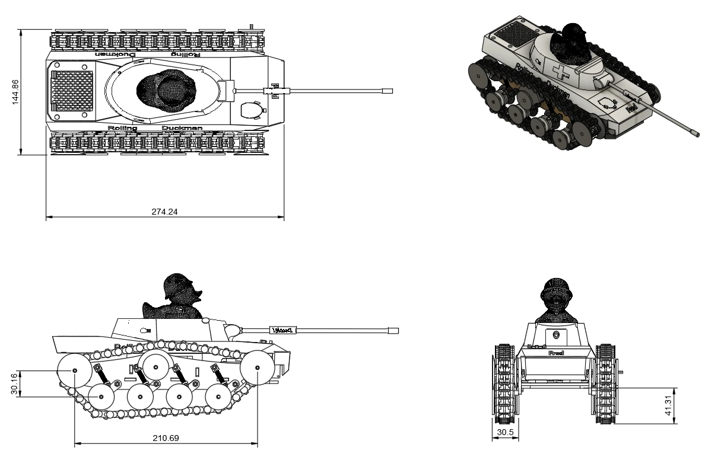
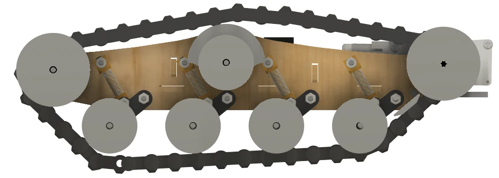
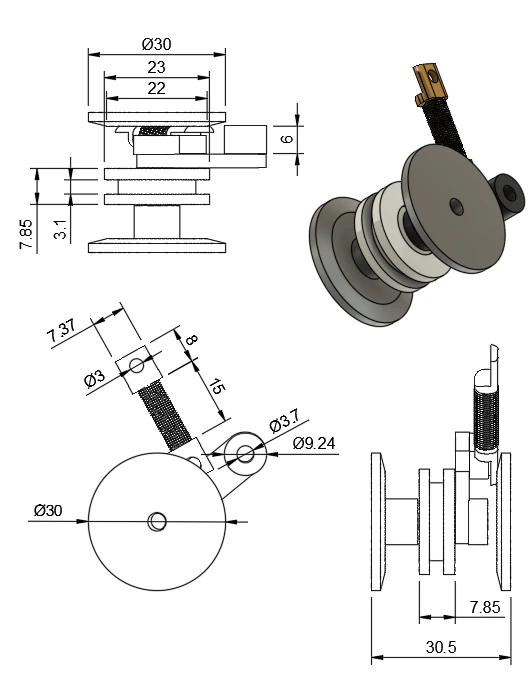
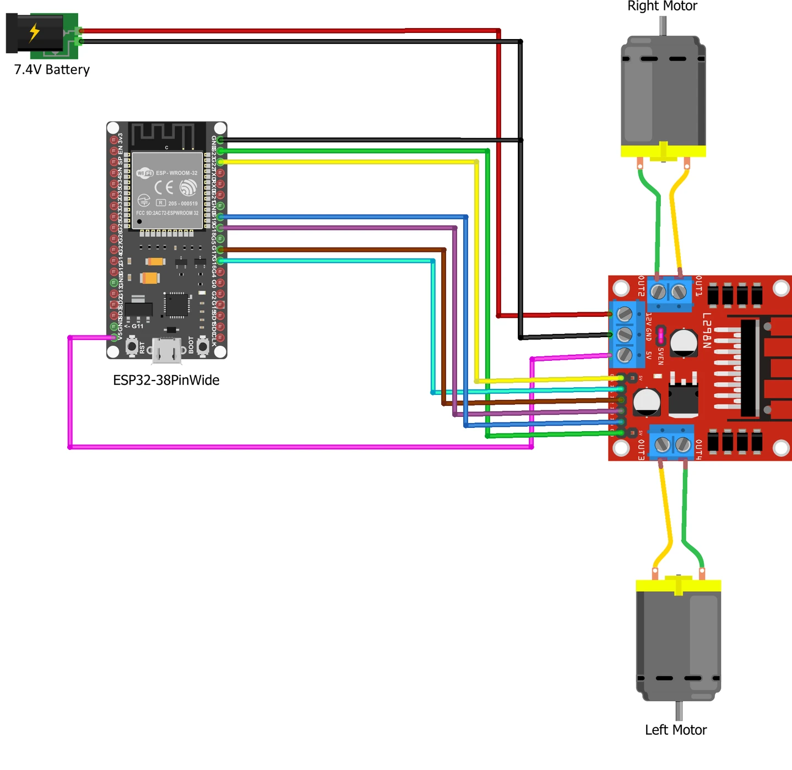

Track design
Linked printed treads wrap around end sprockets and multiple sprung road wheels. Guide features keep the tracks aligned.
A compact tracked rover built from laser-cut plywood and printed components, with suspended road wheels, remote-controlled drive and a tested 114.7:1 gear reduction.

The rover assignment called for a vehicle that could cross 20 mm obstacles and a 30° slope with minimal intervention, using a chassis cut from 3 mm laser plywood. The aim was to complete the course in under 15 seconds.
Three layouts were compared. The tracked design ranked first at 70/90, ahead of two wheeled concepts scoring 67/90 and 60/90. Broad track contact, load distribution and suspension motivated the selection.
The tested vehicle features linked printed treads, spring-supported road wheels, drive motors and an ESP32-based control system. The more elaborate tank body shown in some CAD figures is concept geometry; the tested chassis photographs show the exposed running gear.
The photographs below are from the original build. They have only been cropped and given basic brightness, contrast and sharpness adjustments; no mechanisms or components have been generated or replaced.


These are selected original CAD and electrical figures from the project report, reproduced without altering mechanical geometry. Select any figure to enlarge it.




Linked printed treads wrap around end sprockets and multiple sprung road wheels. Guide features keep the tracks aligned.
Articulated road-wheel mounts and springs help the track remain in contact with uneven ground; an extra roller was added for tension.
The two motors are connected to an ESP32-based remote-control system. The gearbox ratio was selected after testing torque against slope climbing.
| Run | Full course | Outcome |
|---|---|---|
| Trial 1 | 11.04 s | Completed |
| Trial 2 | 11.80 s | Completed |
| Trial 3 | 11.07 s | Completed |
| Average | 11.30 s | Under 15 s target |
The 38.2:1 option did not generate enough torque on the incline; 114.7:1 was selected as the fastest plausible tested ratio. The original evaluation reports a 620 g vehicle, reliable course completion with no slipping and no overheating across 30 minutes of running. Inclines took longer than rocky sections.